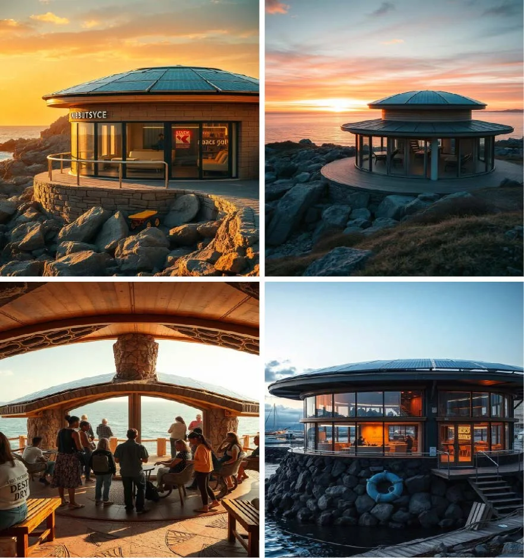
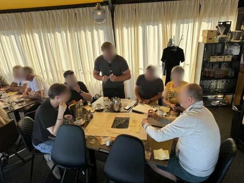
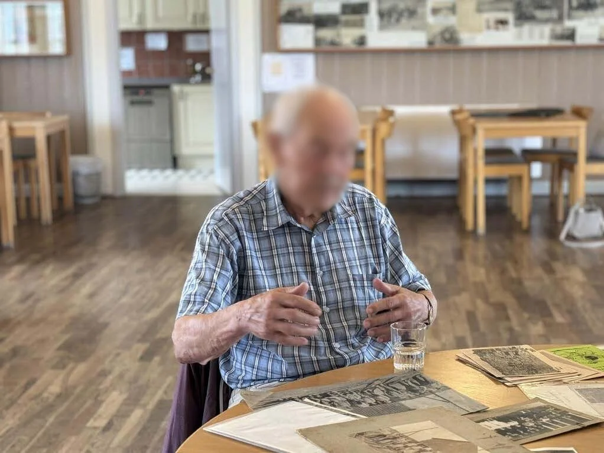
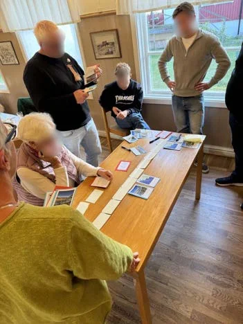
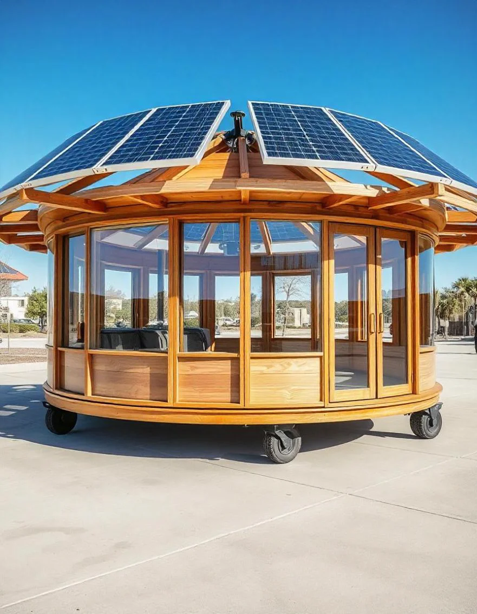
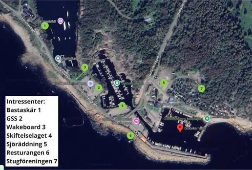
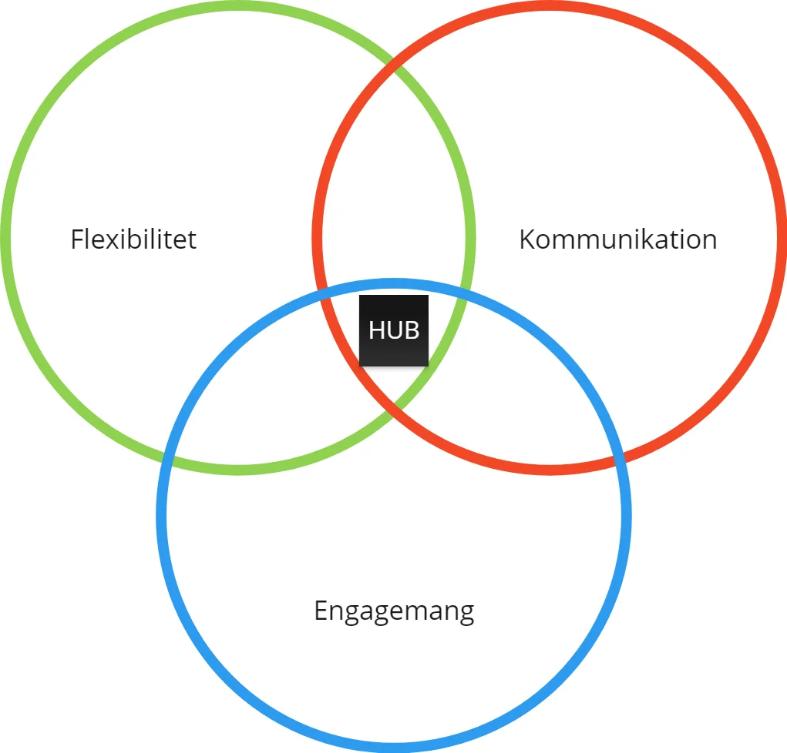

Trafikverket · 2024–2025 · Research Lead & Workshop Designer
Projekt Grötvik
Designing for sustainable tourism and mobility in a coastal village, without erasing what makes it feel like home.


The challenge
Grötvik needed to support growing seasonal tourism and improve mobility without sacrificing the local identity residents value. I led the research: designing and running workshops, conducting interviews, and synthesising the material into insights the team could act on.


Process
Using a design ethnography approach, I engaged residents, visitors, and local authorities through participatory sessions: future scenarios, value mapping, and open interviews. That surfaced the real tension in the brief: accessibility, seasonality, and identity pulling in different directions.
- Fieldwork. Open interviews and on-site observation with residents and visitors to understand everyday friction points across the tourist season.
- Participatory workshops. Ran future-scenario and value-mapping sessions with stakeholders and local authorities to surface long-term aspirations, not just short-term complaints.
- Synthesis. Transcribed and coded the qualitative material myself, grouping it into themes the design team could act on directly.
Key decisions
- Modular over fixed. A single permanent structure couldn't answer to how differently Grötvik behaves in July versus January, so the hub had to be adaptable by design, not by exception.
- Shared, not separated. Early concepts split "resident" and "visitor" infrastructure. I pushed toward one shared point of orientation instead, since separation was what residents were actually pushing back against in the interviews.
- Concept over blueprint. Given the seasonal and stakeholder complexity, I scoped FLEX-HIVE as a tested conceptual proposal rather than a finished spec, since validating direction was more valuable than premature detail.



Outcome
The insights shaped FLEX-HIVE: a modular, mobile hub combining physical and digital touchpoints. It flexes across seasons, supports micromobility, and gives residents and visitors a shared point of orientation and interaction. Its form and placement trace directly back to specific stakeholder input rather than a generic "smart hub" template. Every function it carries answers a friction point someone raised in research.
Reflection
This project sharpened my field research and participatory design practice, and reinforced how much better design gets when it's rooted in the people who'll actually live with it.